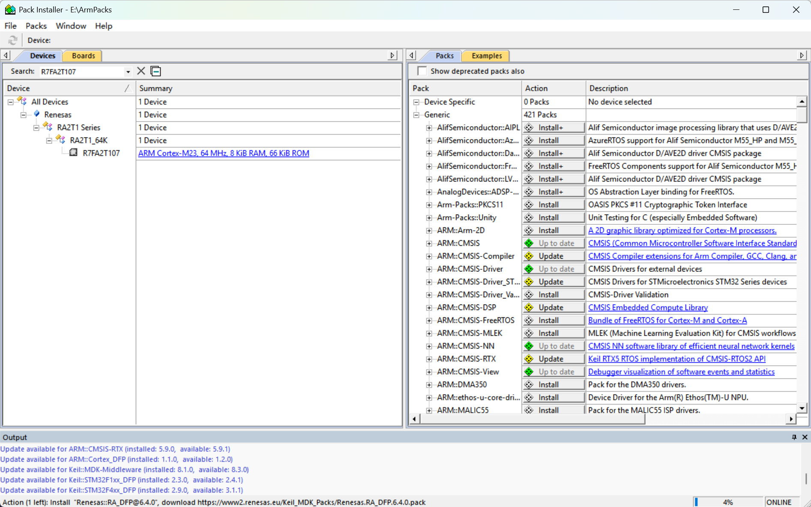
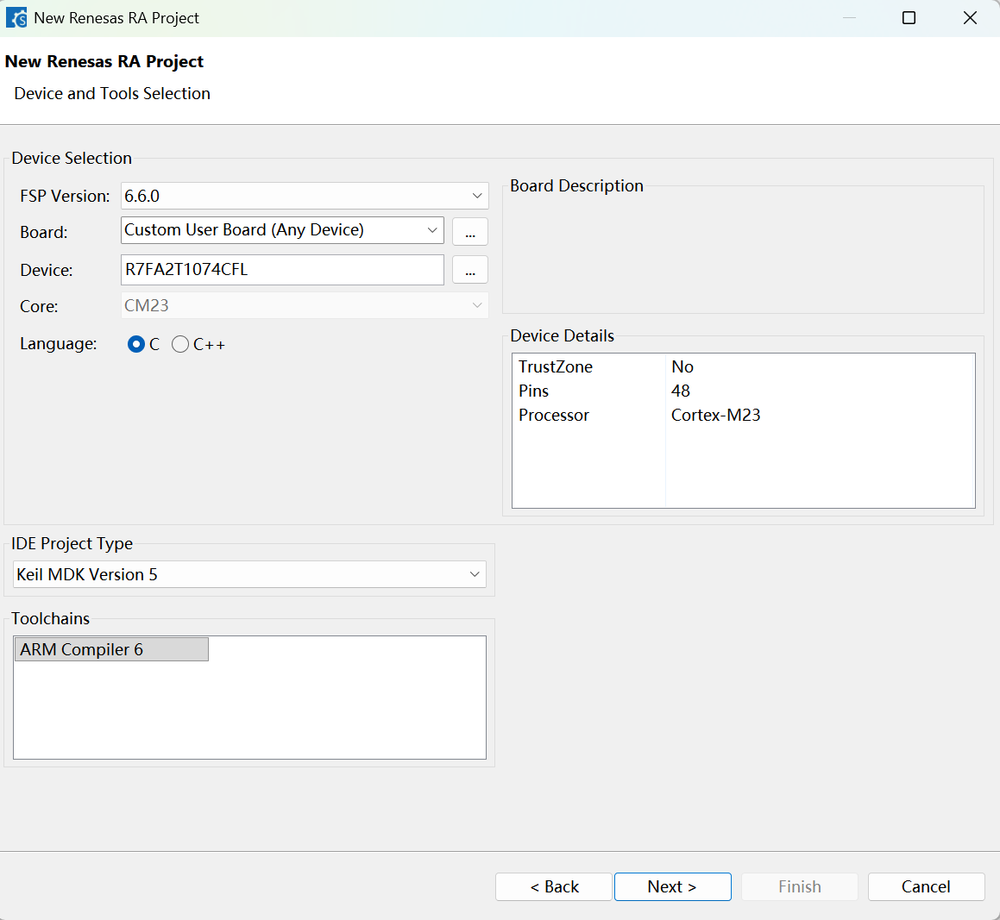
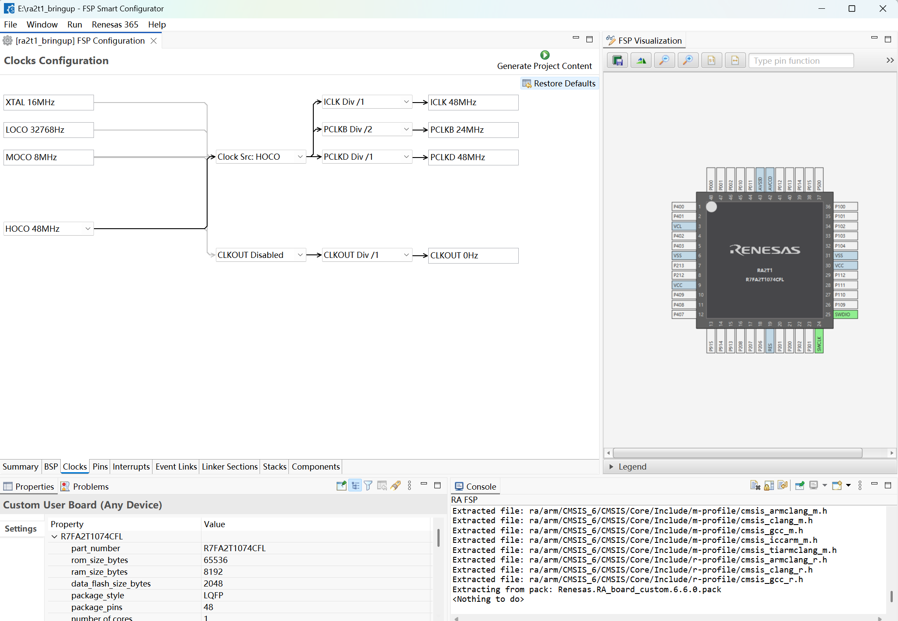
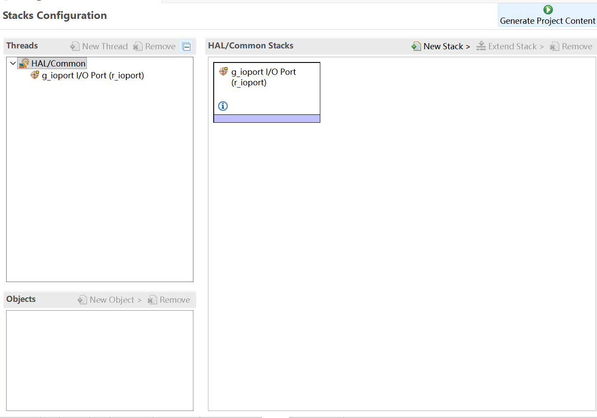
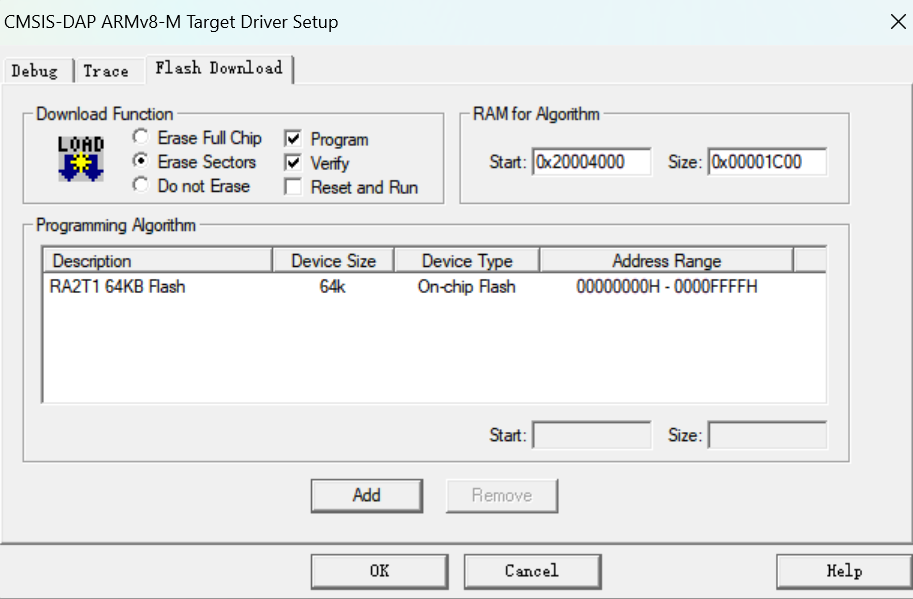
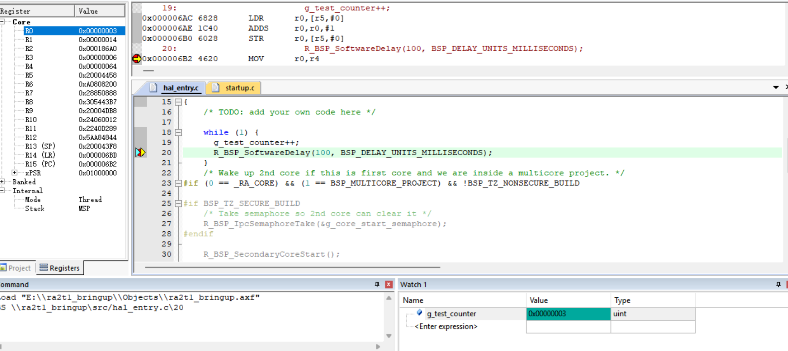

发布时间： · 博客园原文
本文是不用安装e2studio的而用Keil作为IDE进行开发的，HAL环境配置和调通最小工程教程。
- 安装RASC + FSP（setup_fsp_v6_6_0_rasc_v2026-07.exe）：
https://github.com/renesas/fsp/releases/tag/v6.6.0
其中RASC是瑞萨的RA图形配置工具，可配置时钟、引脚、ADC、PWM，生成Keil工程。FSP是瑞萨提供的驱动库和软件组件，生成的工程通过它操作外设。
“FSP 6.6.0 发布说明列出的 Arm Compiler 版本为 6.24，本次使用相同版本。要想看本机的Arm编译器版本，可找到Keil的目录对armclang.exe在PowerShell进行--version的查询，如：
& "D:\Keilv5\ARM\ARMCLANG\bin\armclang.exe" --version
-
安装 Renesas.RA_DFP 器件包：
在Keil Pack Installer中安装R7FA2T107对应的版本。
（Pack Installer里的版本是6.4.0，如果想获取6.6.0的也可以在https://github.com/renesas/fsp/releases/tag/v6.6.0 Assets栏下载MDK_Device_Packs_v6.6.0.zip）

-
用 RASC 生成 Keil 工程。
-
在
C:\Renesas\RA\sc_v2026-07_fsp_v6.6.0\eclipse\rasc.exe中，登录瑞萨账号，新建工程，Device R7FA2T1074CFL，IDE选择Keil MDK Version 5。
-
先配置时钟、保留 SWD，再生成并编译最小工程。时钟源采用内部 HOCO 48 MHz，ICLK 为 48 MHz，PCLKB 为 24 MHz，PCLKD 为 48 MHz。保留 P108 的 SWDIO 和 P300 的 SWCLK 功能。上述数值为配置值，本篇尚未进行外部仪器测量。（点Clocks、Pins、Stacks，检查配置并保存）

在Stacks下有Generate Project Content，点击即生成Keil工程。
-
-
在Keil里编译验证通过后，在
hal_entry.c中定义全局变量volatile uint32_t g_test_counter = 0;，并在void hal_entry(void)里/* TODO: add your own code here */下面加上
while (1) {
g_test_counter++;
R_BSP_SoftwareDelay(100, BSP_DELAY_UNITS_MILLISECONDS);
}
并再次编译。
5. 在Keil中为程序地址配置烧写算法。
- 打开 Options for Target → Debug → CMSIS-DAP Debugger → Settings → Flash Download。
- 将 RAM for Algorithm 的Start值改为0x20004000，Size值改为0x00001C00。
- 在 Programming Algorithm 区域点击 Add。
- 选择 RA2T1 64KB Flash，点击 Add。

- 烧录程序并在Debug模式下观察结果。
在 g_test_counter++ 处设置断点，进入调试后能够命中断点。将 g_test_counter 加入 Watch 窗口，单步执行时可以观察到计数增加。取消断点并连续运行后，再暂停程序，计数值继续增加，验证了最小工程的执行情况。

总结
本次完成了 RASC＋FSP 到 Keil MDK 的最小工程搭建，并使用 CMSIS-DAP 实现程序烧写和断点调试。RASC 可以生成工程和外设初始化代码，但切换调试器后，仍需检查 Flash 烧写算法及其 RAM 参数。本次主要问题集中在下载配置，修正后成功运行计数器测试程序。下一篇将开展时钟、GPIO/PWM 和 ADC 的配置与实测。